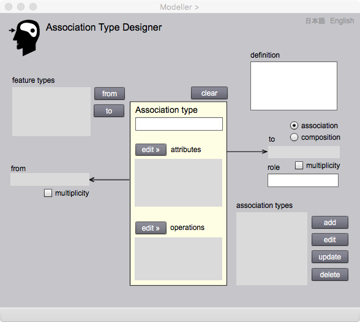

Association Type Designer
関連型の設計
地物同士の関係はさまざまです．例えば，距離，包含といった，空間属性の幾何学的な関係があります．また，先と後を示す時間順序関係も考えられます．これらは地物の属性同士の関係です．一方，地物のレベルでは，継承の関係のように，もっているプロパティの継承をともなう，親子の関係があります．
Association Type Designer は，継承 (inheritance) 以外の関係である「関連 (association)」を設計するためにあります．例えば，会社と従業員の関係は，雇用契約をかわしていると発生する関連です．製品全体と部品の関係は，設計図などで，その部品が製品に組み込まれると発生す関連です。前面道路と路側にある建物の関連は，建物にいる人が，直接的に道路にアクセスしていると生まれる関連です．
地物関連の設計では，どの地物からどの地物に関連するか，を考えて，それを定義づけることを行います．gittok GFM によれば，前者は from地物，後者は to地物といいます．これらの地物は，関連を通じて役割をもちます．例えば，建物という地物型は，学校という地物型との関連において，校舎という役割をもつことになるでしょう．逆に，建物に関連する学校は，使用者という役割をもつかもしれません．
関連は，それ自体が地物として働くことがあります．例えばBuildingToRoadという関連型が，道路と建物の距離を求める操作をもっていてもいいでしょう．関連と言っても，実世界で起きる現象である限り，地物と見なしてもよいので，関連型は地物型と継承の関係をもちます．従って，関連型はより抽象度の高い地物型や関連型のプロパティを継承することがありえます．例えば道路は，建物だけではなく，様々な地物（橋，トンネル，公園，・・・）と関連するでしょう．これらの関連の総称として，「道路と施設の関連」という関連が定義されるとすれば，BuildingToRoad は，その下位型になります．ただし，gittok では，応用スキーマの構造が複雑化しないように，関連同士の継承関係は認めていません．
さて，from地物とto地物の間には，from 地物が消滅すると，全ての to 地物も消滅する，強い関係が考えられます．このような関連は合成 (composite)といわれます．例えば，建物を取り壊してしまえば，普通はその中にあった部屋も廊下も階段も，消滅してしまいます．そのとき，建物と，部屋，廊下，そして階段の関係は合成関係といえます．gittok では，関連を composite にするときは，関連先の地物が，他の地物の関連先になっていないことが，条件になります．関連先はあくまでも，関連元を構成する部品なので，他から参照されることはありません．ところで，UMLを知っている方は，aggregateという関連もあるのではないかという質問があるかもしれません．この関連は，全体と部分の関連であって，全体が消滅しても部分が残る場合を指すと言われています．gittokでは，これは普通の関連とほとんど変わらないと考え，あえてaggregateは設けていません．
Association Type Designer の操作画面

図１．Association Type Designerの操作画面
FIELDS
feature types（選択可能）
Feature Type Designerで定義した地物型の一覧が，ここに表示されます．関連元 (from)，関連先 (to)を指定するときに，この一覧から地物型を選択します．
from
関連元になる地物型の名称が，ここに表示されます．
to
関連先になる地物型の名称が，ここに表示されます．
association type（編集可能）
新たに関連型を定義するときは，名称をここにキーインして，指定します．また，編集中の関連型の名称がここに表示されます．
definition（編集可能）
関連型の定義をここに記入します．
attributes
編集中の関連型がもつ属性の型名が，この一覧に表示されます．
operations
編集中の関連型がもつ操作の名称が，この一覧に表示されます．
role（編集可能）
編集中の関連先地物の役割名が，ここに表示されます．新たに役割名を与えるときは，名称をここにキーインして，指定します．
association types (選択可能）
編集し，登録された関連型の一覧が，ここに表示されます．
BUTTONS
from
Feature Type欄で地物型を選択した後，このボタンを押すと，関連元の地物型として，from欄にこの地物型が登録されます．
to
Feature Type欄で地物型を選択した後，このボタンを押すと，関連先の地物型として，to欄にこの地物型が登録されます.
editAttributes
このボタンを押すと，Attribute Type Designer が表示され，属性型の宣言が可能になります.
editOperations
このボタンを押すと，Operation Type Designer が表示され，操作型の宣言が可能になります．
associate/composite
ここでは，関連先の地物との関連の種類を選択します．associate は普通の関連，compositeは合成になります．
multiplicity
もし関連先の地物インスタンスが複数になることを許すときは，このボタンをチェックします．
add
現在編集している関連型が，association types欄に追加登録されます．既に登録されている関連型と同じ名前のものは，追加できません．
edit
assoication type欄で選択されている関連型を編集できるようにします．
update
現在編集されている関連型を更新登録します．追加登録の場合は，addを押して下さい．
delete
association type欄で選択されている関連型が削除されます．
日本語
今あなたが読んでいるドキュメントが表示されます．
English
You can read the tutorial written in English.